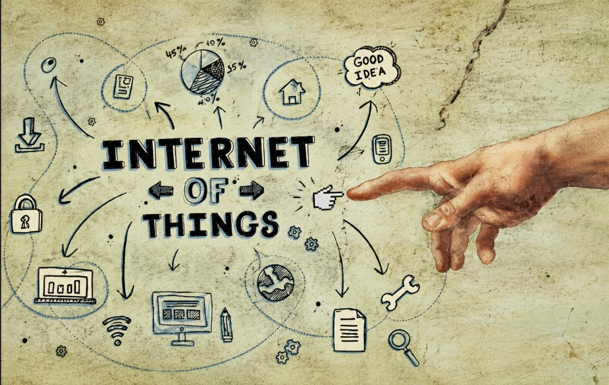

The Latent Archive
Notes from the margins
Notes / Folder
A folder for unit notes. More units go here as they land.

The Unit 1 study-guide home ; all five chapters, in the order the ideas build.
What IoT is, how its traffic differs from the web, connectivity and gateways, and a tour of the main verticals.
Three-layer, five-layer, and Cisco IoTWF models ; where edge, fog, and cloud each earn their place.
Sensor taxonomies, the boards that read them, the metrics that matter, and what turns a sensor into a smart object.
Embedded system anatomy, ESP32 GPIO and power modes, and why Cortex-M and Cortex-A are built for opposite jobs.
A Python REPL on bare metal to setup() / loop() in C ; the guided tasks from the last deck.